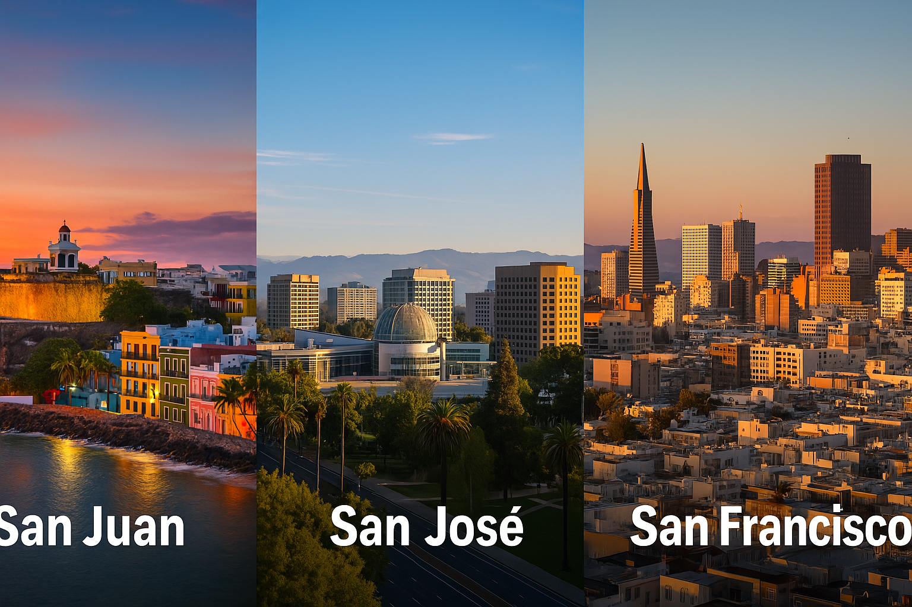

🌡️ Warmest Winter on Record Felt in San Juan, San José & San Francisco
EN: Winter 2025 was one of the warmest on record globally — and cities like San Juan, San José, and San Francisco felt it. In San Juan, Puerto Rico, this winter brought unusually warm nighttime temperatures, making it harder for people to cool down and rest. Meanwhile, San José and San Francisco experienced fewer cold nights, with daytime highs feeling more like early spring. According to Climate Central, the increase in winter warmth is consistent with the long-term trends driven by climate change. These patterns are not just numbers — they affect agriculture, health, and energy use across our communities.
ES: El invierno de 2025 fue uno de los más cálidos a nivel global — y ciudades como San Juan, San José y San Francisco lo sintieron. En San Juan, Puerto Rico, las noches invernales fueron más cálidas de lo normal, dificultando el descanso y aumentando el uso de aire acondicionado. En San José y San Francisco, hubo menos noches frías y más días templados, con temperaturas parecidas a las de la primavera. Según Climate Central, este calentamiento invernal está en línea con las tendencias a largo plazo provocadas por el cambio climático. Estos cambios no son solo cifras — impactan la salud, la agricultura y el consumo energético de nuestras comunidades.